seq(from = 2, to = 100, by = 2)
교사의 AIㆍ디지털 역량과 세 가지 사이언스의 융합 1
교사의 AIㆍ디지털 역량
교사의 AIㆍ디지털 역량
도입


.JPG)

ChatGPT
by
OpenAI
(2022.11.30.)
튜링 테스트
by
앨런 튜링
Alan Turing
(1949)
Google DeepMind
vs.Lee Sedol
2016.03.13.


트랜스포머(Transformer)
“Attention is All You Need” (2017)
2013
ChatGPT
by
OpenAI
(2022.11.30.)
“생성 능력을 가진, 사전학습된,
트랜스포머 구조 기반 언어모델”
Generative
Pre-tranind
Transformer
GPT
-
Generative 생성적
입력을 분류 및 분석하는 것이 아니라 새로운 텍스트를 생성할 수 있음
텍스트 뿐만 아니라, 이미지, 음성/오디오, 비디오, 코드, 멀티모달 생성
-
Pre-trained 사전학습된
방대한 범용 텍스트 데이터로 일반 언어 패턴을 미리 학습
문법, 의미, 맥락, 지식 패턴을 학습
-
Transformer 트랜스포머
학습 메커니즘: 딥러닝 신경망 구조
-
‘셀프 어텐션(self attention)’
문장 내 각 요소를 문장 전체 맥락 속에서 재정의
문맥에 맞는 해석 및 문장 내에서 멀리 떨어진 단어 간 관계 포착에 유리
LLM(대규모 언어 모델)

TPACK과 AIㆍ디지털 역량
TPACK: 개념
-
Technological Pedagogical Content Knowledge, 테크놀로지 교수내용지식
Lee Shulman의 교수내용지식(PCK)(1986)
Mishra & Koehler(2006): 교사가 “무엇을, 어떻게, 그리고 어떤 테크놀로지로” 가르칠지를 통합적으로 이해하고 실천하는 프레임워크
-
세 가지 기본 지식 영역
CK(Content Knowledge, 내용지식): 교과 내용에 대한 전문 지식
PK(Pedagogical Knowledge, 교수지식): 교수ㆍ학습 방법에 대한 지식
TK(Techonological Knowledge, 테크놀로지 지식): 다양한 테크놀로지 도구와 시스템에 대한 지식
TPACK: 개념
-
결합 영역
PCK(Pedagogical Centent Knowledge, 교수내용지식): 특정 내용을 효과적으로 가르치는 방법에 대한 지식
TCK(Technological Content Knowledge, 테크놀로지 내용지식): 특정 기술이 어떤 방식으로 내용 지식으로 표현, 탐구, 적용할 수 있는지에 대한 이해
TPK(Technological Pedagogical Knowledge, 테크놀로지 교수지식): 특정 기술이 교수ㆍ학습을 어떻게 강화 및 변형할 수 있는지에 대한 이해
TPACK(테크놀로지 교수내용지식): 세 가지 요소가 통합된 상태, 특정 내용을 특정 교수법과 특정 기술을 활용해 효과적으로 가르치는 지식
TPACK: 적용
-
PCK(교수내용지식)
- 여러 나라의 인구 피라미드를 비교하도록 하여, 저출산과 고령화의 다른 원인을 토론하게 하는 수업
-
TCK(테크놀로지 내용지식)
- GIS 소프트웨어(QGIS)를 활용하여 TFR을 지도 위에 시각화
-
TPK(테크놀로지 교수지식)
저출산 고령화 문제에 대한 협동학습에서 학생들이 Padlet이나 Google Docs를 활용해 공동으로 답안을 작성하게 함
Google My Maps를 통해 지도를 제작하게 함
-
TPACK(테크놀로지 교수내용지식)
- 학생들이 전 세계 국가별 TFR을 시각화하고, 토론을 통해 지역적ㆍ세계적 맥락에서 저출산 문제를 분석 및 해결책을 모색하게 하는 프로젝트 수업
TPACK: 확장
AI-TPACK: Nign et al. (2024)
TPACK-Uotl: Sifyan et al. (2023)
TDL-TPACK: Cui and Zhang (2022)
DPACK: Thyssen et al. (2023)
AI Literacy TPACK: Ng et al. (2021)
TPACK-DBL 프레임워크
-
“TPACK은 내용, 교수, 테크놀로지라는 세 핵심 영역을 초월하여, 이들의 상호작용 속에서 형성되는 새로운 형태의 지식”
- 통합된 총체적 역량
-
어떻게 TPACK 역량을 함양할 있을까?: ‘디자인을 통한 테크놀로지 학습’
-
‘실제적(authentic) 디자인 활동’이 실천적 TPACK 발달을 촉진
- 단순한 이론적 디자인 연습이 아니라 현실의 수업 맥락이나 교육적 요구를 반영하여 무언가를 실제적으로 디자인 및 구현하는 활동
테크놀로지의 어포던스(affordance)와 제약을 주어진 교과 내용과 교수법, 그리고 현장 맥락과의 끊임없는 상호작용을 통해 이해하게 된다는 것을 의미
-
TPACK-DBL 프레임워크
-
DBL(design-based learning, 디자인-기반 학습)
“탐구와 추론의 과정을 바탕으로 혁신적인 산출물, 시스템, 해결책을 생성하는 교육적 접근”
PBL(problem-based learning, 문제-기반 학습)과 유사하지만 구체적인 디자인 과제를 수행한다는 점에서 차이
DBL은 교육 대상이 실제 디자인 문제를 해결하는 과정에 참여하여 범위 설정, 생성, 평가, 창출이라는 공학적 인지 과정을 경험하는 동시에 자신의 학습 과정을 성찰하도록 하는 교수법
디자인 씽킹(design thinking) 개념과도 직접적인 연관성
-
TPACK-DBL 프레임워크
TPACK과 DBL을 결합함으로써 ’디자인을 통한 테크놀로지 학습’이 이루어지기 위한 원리 혹은 절차를 제시
DBL의 내용 중 TPACK의 발달을 촉진하는 8대 원리 제시
TPACK-DBL 프레임워크

TPACK-DBL 프레임워크
| 원리 | 내용 |
|---|---|
| 브레인스토밍 | 테크놀로지 통합과 관련된 문제의 잠재적 해결 방안을 탐색하고 논의하는 과정 |
| 테크놀로지 통합 산출물 디자인 | 수업안, 학습 자료, 디지털 콘텐츠 등과 같이 TPACK 기반의 구체적 교육 산출물을 설계하는 과정 |
| 디자인 사례 검토 | 학습자가 테크놀로지 통합 학습 시나리오, 교수ㆍ학습 활동, 수업안 등의 사례를 탐색, 분석, 비평하는 과정 |
| 이론적 지식과의 접목 | 자기주도 학습, 협력 학습과 같은 학습 이론 뿐만 아니라 학습 주제와 관련된 원리나 핵심 개념을 고려하는 과정 |
| ICT 도구 탐색 | 학습자가 디자인에 앞서 테크놀로지의 기능, 교수적 어포던스, 활용 조건 등을 심층적으로 탐색하는 과정 |
| 디자인 경험에 대한 성찰 | 학습자가 디자인 과정에서의 어려움, 선택의 이유, 교수적 적합성을 반추하며 자신의 이해를 구조화하고 TPACK 발달 수준을 점검하는 과정 |
| 실제 맥락 속 디자인 적용 | 설계된 자료를 실제 교수 현장에 적용함으로써 실행 가능한 TPACK의 양상을 탐구하고, 맥락적 변인을 분석하는 과정 |
| 디자인 팀 내 협력 | 구성원들이 공동의 테크놀로지 통합 과제를 수행하면서 해결 방안을 함께 모색함으로써 TPACK을 더욱 실천적으로 발전시키는 과정 |
교사의 AIㆍ디지털 역량
교사는 디지털 교육 콘텐츠의 주체적 생산자
-
교사는 단순히 수업에서 활용할 AIㆍ디지털 도구를 배우는데 그치지 않고, 직접 테크놀로지가 통합된 교육 산출물를 설계 및 구현할 수 있는 능력 필요
교수ㆍ학습 상황 설계: 특정 교과 내용을 가를칠 때 어떤 AIㆍ디지털 도구를 통합할지 계획
디지털 산출물 제작: 교사가 직접 테크놀로지를 활용해 교육 자료를 제작
동료 협업 및 피드백: 만든 산출물을 다른 교사와 공유하고, 수업 적용 가능성을 논의
인터랙티브 교수ㆍ학습 웹 앱의 제작 역량
인터랙티브 교수ㆍ학습 웹 앱: 기본 개념
학습자와 콘텐츠 간의 상호작용을 중심으로 설계되어, 능동적 참여, 즉각적 피드백, 탐구 활동 등을 개인의 학습 경험을 향상시키는 교육용 웹 애플리케이션
웹 브라우저를 통해 접근하고 사용하는 교수ㆍ학습 목적의 애플리케이션
-
성격
디지털 학습지: 교과의 학습 내용을 효과적으로 교수ㆍ학습하도록 도와주는 도구
탐구 학습 도구: 데이터 탐색을 통해 학습자 스스로 이해, 지식, 통찰을 얻도록 도와주는 도구
인터랙티브 교수ㆍ학습 웹 앱: 기본 개념
-
데이터 대시보드: 단일한 주제에 대한 상호연관된 다양한 데이터 정보를 그래픽 형태로 일관성 있게 제시한 것
-
레이아웃 요소: 대시보드의 기본 구조
카드
페이지, 네비게이션바, 사이드바, 툴바, 탭셋 등
-
내용 요소: 카드를 채우는 콘텐츠
- 텍스트, 표, 그래프, 동영상, 밸류 박스, 지도, 챗봇(LLM 활용) 등
작동 요소: 상호작용성의 형식과 정도
-
인터랙티브 교수ㆍ학습 웹 앱: 예시
제작 도구
제작 도구
-
R(혹은 Python): 인터랙티브 콘텐츠 제작
데이터사이언스 프로세스의 실행: tidyverse
인터랙티브 시각화 및 탐색 기능의 구현: 다양한 패키지
-
Quarto(쿼토): 대시보드 제작 및 프론트앤드 웹 앱 생성
“과학적, 기술적 출판을 위한 위한 오픈소스 시스템”
다양한 형식의 저작물(노트, 연구 논문, 프레젠테이션, 대시보드, 웹사이트, 블로그, 서적 등)을 다양한 디지털 포맷(HTML, PDF, MS Word, ePub 등)으로 출판할 수 있게 해주는 도구
-
Shiny(샤이니): 서버-기반 웹 앱 개발
UI-Server 이원 구조
반응형 프로그래밍(reactivity)
제작 도구


R(알)
제작 도구: R(알)

제작 도구: R(알)

제작 도구: Quarto(쿼토)
제작 도구: Shiny(샤이니)
R 개관
R의 탄생: R의 아버지들(1993년)
R의 탄생: 1.0.0버전(2000년)
Base R: 기초 개념
-
객체(object): R 환경 안에 존재하는, 식별가능하고 조작 가능한 모든 엔터티
데이터 객체: 숫자/문자/논리값, 벡터, 데이터 프레임
비데이터 객체: 함수, 플롯, 모형 등
-
할당(assignment): 데이터와 이름을 연결해 R 환경에 객체를 저장하는 프로그래밍 언어적 동작
- 특정한 할당 연산자 사용:
<-또는=
- 특정한 할당 연산자 사용:
연산자(operator): 하나 이상의 객체(피연산자)에 적용되어, 객체의 상태를 바꾸거나 새로운 값을 만드는 프로그래밍 언어의 기본 요소
함수(function): 특정 동작을 수행하는 코드 블록. 인풋을 함수에 적용하면 함수의 고유한 동작을 통해 아웃풋이 산출
Base R: 연산자 Operators
Base R: 할당 연산자
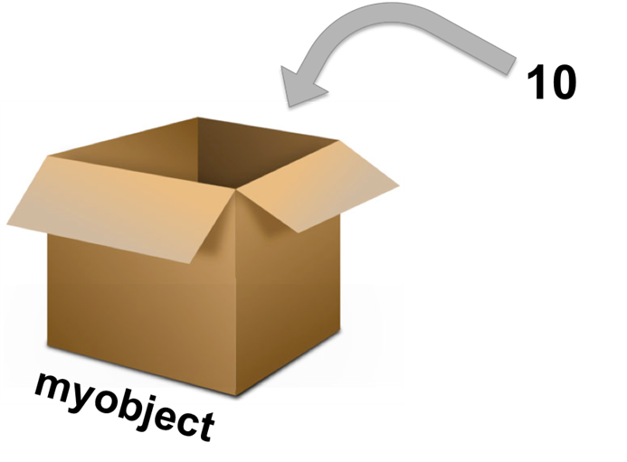
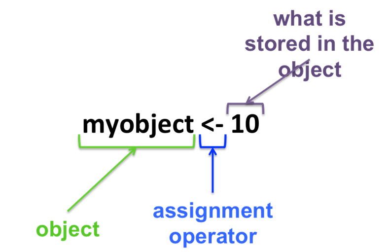
Base R: 산술 연산자
| Operator | Description | Example |
|---|---|---|
+ |
addition | 5+5=10 |
- |
subtraction | 5-5=0 |
* |
multiplication | 2*8=16 |
/ |
division | 100/10=10 |
^ (or **) |
exponent/power | 5^2=25 |
%% |
modulo | 100%%15=10 |
%/% |
integer division | 100%/%15=6 |
Base R: 관계, 논리, 기타 연산자
| Type | Operator | Condition |
|---|---|---|
| 관계 Relational | x < y |
Where x less than y
|
x > y |
Where x greater than y
|
|
x <= y |
Where x less than or equal to y
|
|
x >= y |
Where x greater than or equal to y
|
|
x == y |
Where x (exactly) equals y
|
|
x != y |
Where x is not equal to y
|
|
| 논리 Logical | ! |
Negation |
& |
Logical “and” (x >= 20 & x < 35) |
|
| |
Logical “or (x == 20 | x > 45) |
|
xor |
Logical “exclusive or” (xor(x == 20, x == 50) |
|
| 기타 Miscellaneous | x %in% y |
Where x is in y
|
!x %in% y |
Where x is not in y
|
Base R: 함수 functions
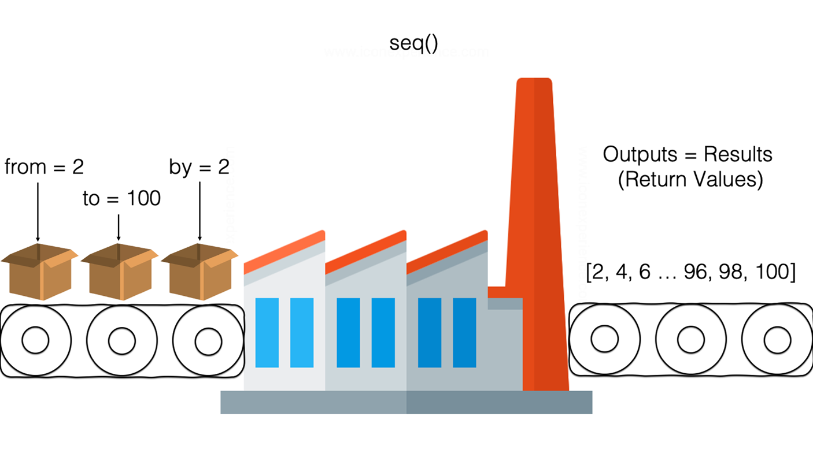
Base R: 주요 산술 함수
| 분류 | 함수 |
|---|---|
| 절대값/부호 |
abs(), sign()
|
| 제곱근/지수 |
sqrt(), exp()
|
| 로그 |
log(), log10(), log2()
|
| 삼각함수 |
sin(), cos(), tan(), asin()
|
| 반올림 |
round(), floor(), ceiling(), trunc()
|
| 요약 |
sum(), mean(), median(), var(), sd(), min(), max(), range(), summary()
|
Base R: 그 외 많이 쓰이는 함수
| 분류 | 함수 |
|---|---|
| 논리형 판별 |
is.na(), is.numeric(), is.character(), is.null()
|
| 수열/반복 |
seq(), rep()
|
| 난수/표본 생성 |
sample(), rnorm()
|
| 유형 변환 |
as.numeric(), as.character()
|
| 표준화 | scale() |
| 길이 | length() |
| 정렬 |
sort(), order()
|
| 중복 처리 |
unique(), duplicated()
|
Base R: 데이터 객체
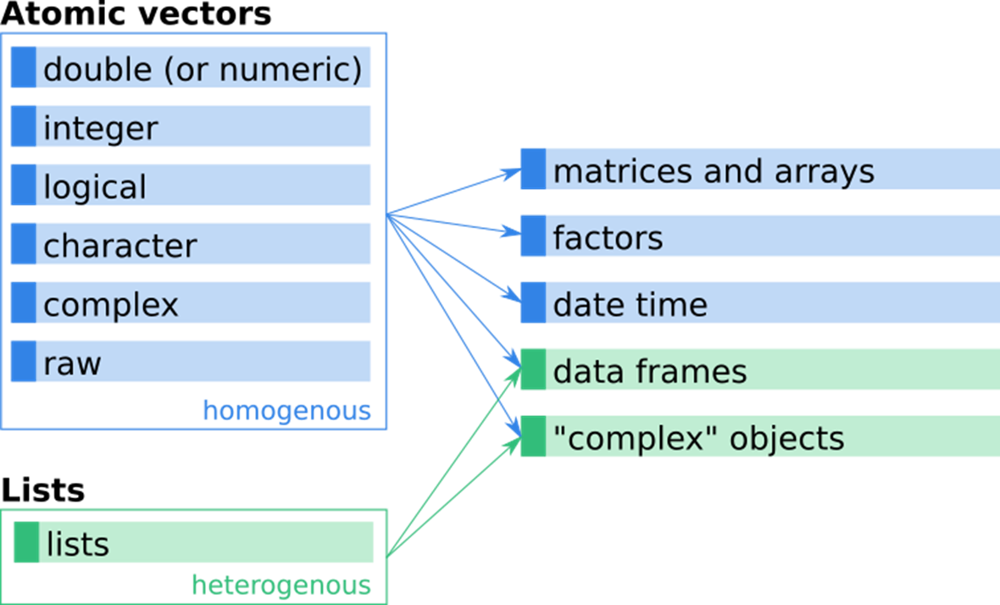
Base R: 벡터와 데이터 프레임
a <- c(58, 26, 24, 19)
b <- c(58L, 26L, 24L, 32L)
c <- c(TRUE, TRUE, FALSE, FALSE)
d <- c("이상일", "김우형", "박서우", "이하은")
df <- data.frame(a, b, c, d)
df a b c d
1 58 58 TRUE 이상일
2 26 26 TRUE 김우형
3 24 24 FALSE 박서우
4 19 32 FALSE 이하은IDE: RStudio(2011년)
IDE(integrated development environment, 통합개발환경)
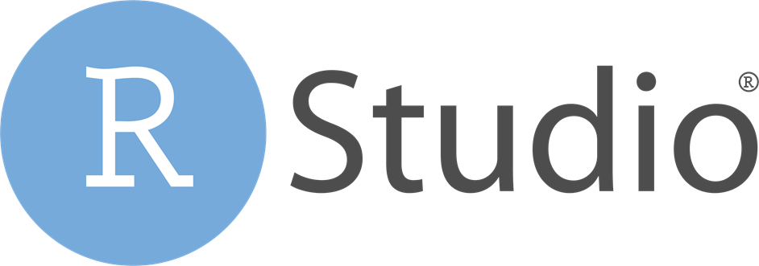
IDE: RStudio(2011년)
IDE: RStudio(2011년)

IDE: RStudio

IDE: RStudio
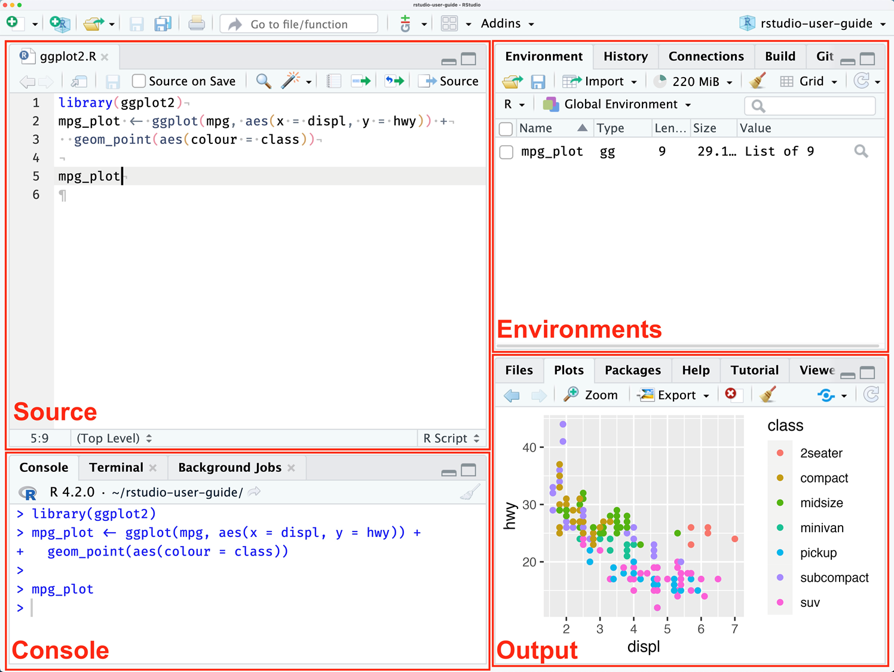
데이터사이언스와 R: posit(2022년)
데이터사이언스와 R
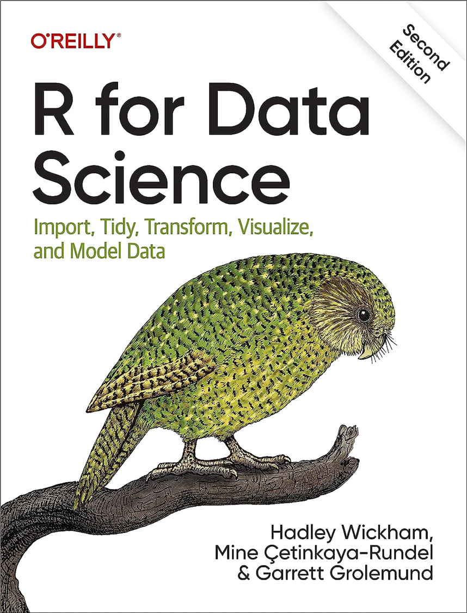
데이터사이언스와 R: 혁신가

Hadley Wickham
데이터사이언스와 R: 데이터사이언스 프로세스
데이터사이언스와 R: 타이디버스
데이터사이언스와 R: 타이디버스
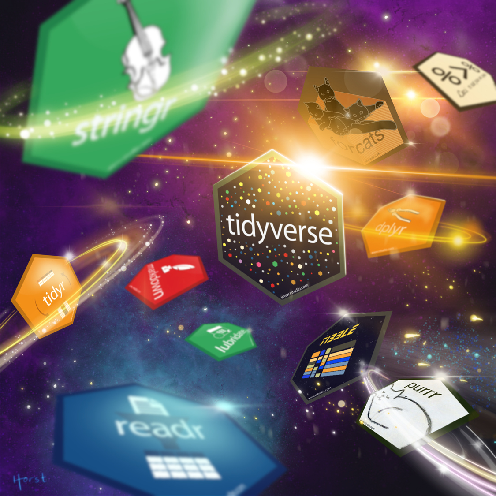
데이터사이언스와 R: 타이디버스
“정돈된 데이터(tidy data) 처리와 분석을 위한 하나의 우주적 생태계”
-
데이터사이언스를 일관성 있게 수행하기 위한 패키지들의 패키지
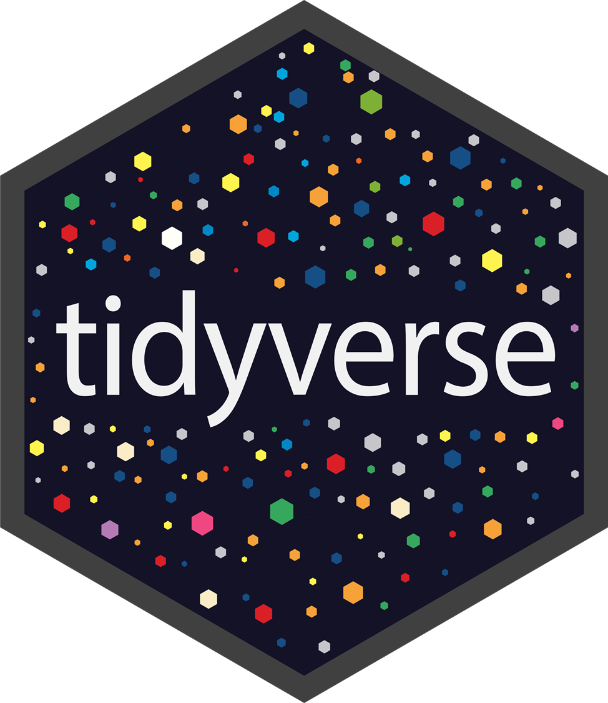

데이터사이언스와 R: 타이디버스
타이디 디자인 원리(Tidy Design Principles)
-
인간중심성 Human-centeredness
- For an end-user programmer
-
일관성 Consistency
- The smallest possible set of key ideas, used as comprehensively as possible
-
조합성 Composability
- Many simple pieces, composed for a larger task using operators such as |> and +
-
포용성 Inclusiveness
- Towards a diverse, open, and friendly community
데이터사이언스와 R: 파이프 연산자

데이터사이언스와 R: 파이프 연산자
ingredients <- tibble(우유, 계란, 밀가루)
mix_result <- mix(ingredients, 강도, 혼합시간, ...)
bake_result <- bake(mix_result, 온도, 굽기시간, ...)
decorate_result <- decorate(bake_result, 장식1, 장식2, ...)
slice_result <- slice(decorate_result, 절단도구, 등분수, ...)slice_result <- slice(
decorate(
bake(
mix(
tibble(
우유, 계란, 밀가루
), 강도, 혼합시간, ...
), 온도, 굽기시간, ...
), 장식1, 장식2, ...
), 절단도구, 등분수, ...
) tibble(우유, 계란, 밀가루) |>
mix(강도, 혼합시간) |>
bake(온도, 굽기시간) |>
decorate(장식1, 장식2, ...) |>
slice(절단도구, 등분수) -> slice_result데이터사이언스와 R: 파이프 연산자
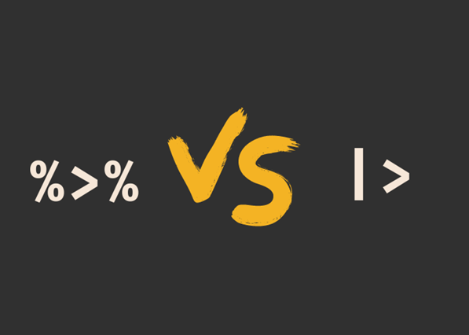
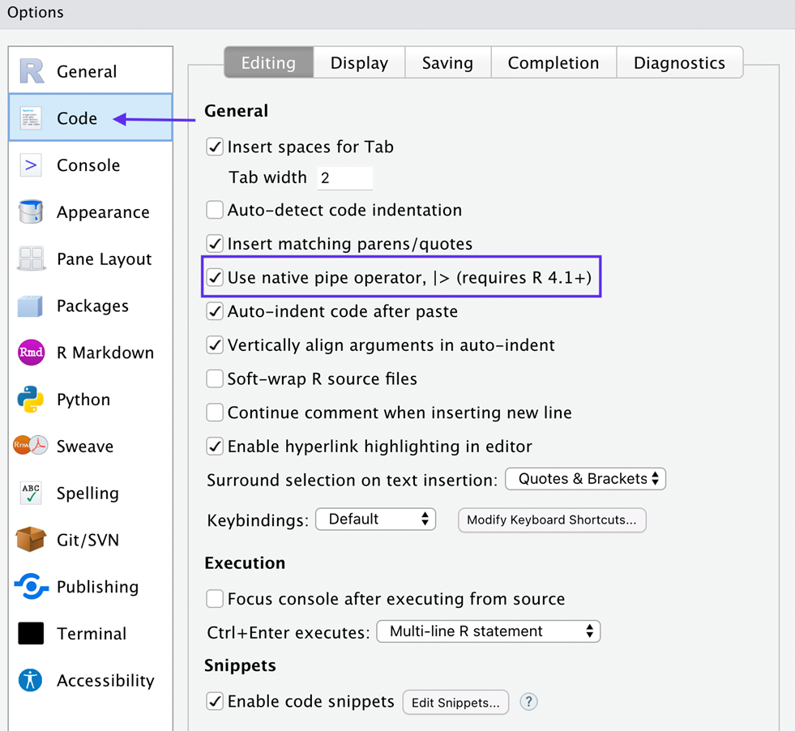
데이터사이언스와 R: 파이프 연산자
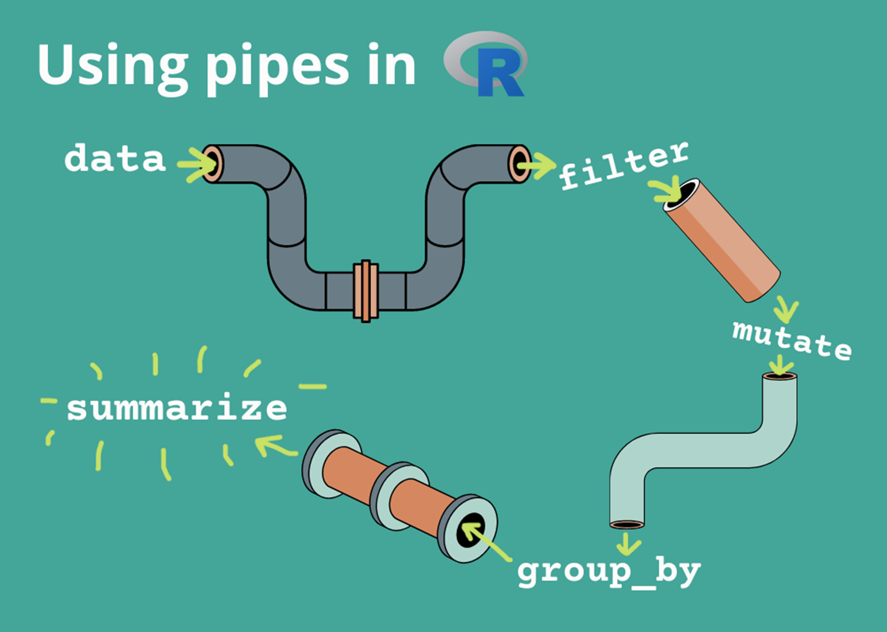
No error, no gain!
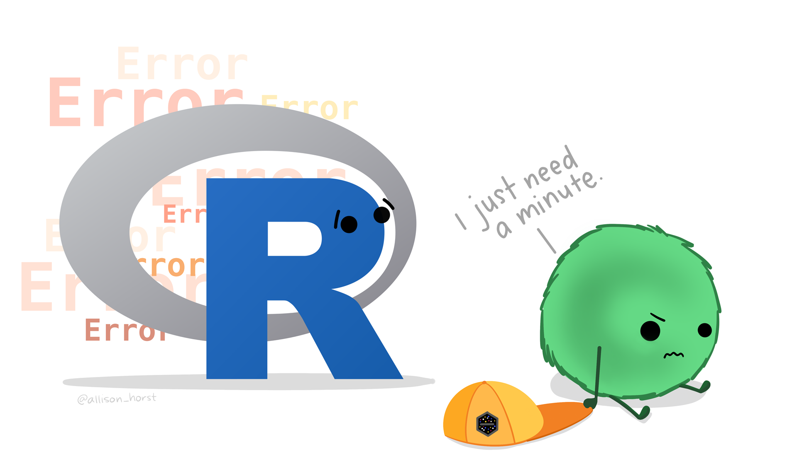